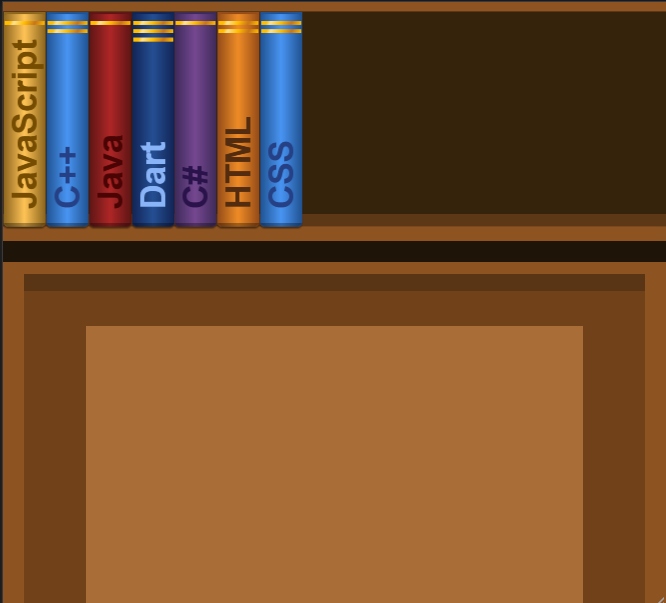
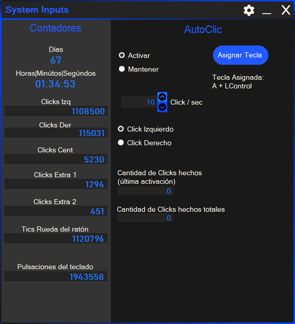
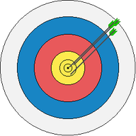

Docente universitario
Universidad Autónoma de Entre Ríos, Facultad de Ciencia y Tecnología
Docente auxiliar universitario en la carrera de Licenciatura en Sistemas.
Analista de Sistemas de Información y desarrollador de software
Tengo 27 años y soy Analista en Sistemas de Información desde hace 4 años y 3 meses. Me dedico al desarrollo de software, y lo que más me gusta es programar: es habitual que esté escribiendo código. Hoy continúo mis estudios con la Licenciatura en Sistemas de Información.
Desde que me recibí aprendí distintas tecnologías, algunas por curiosidad y otras porque un trabajo lo pedía: desarrollo móvil, aplicaciones web (front-end y back-end), APIs, aplicaciones de escritorio y un poco de desarrollo de juegos.
Desde jul 2022
Universidad Autónoma de Entre Ríos, Facultad de Ciencia y Tecnología
Docente auxiliar universitario en la carrera de Licenciatura en Sistemas.
Trabajo independiente
Desarrollo de aplicaciones de software a demanda. Las tecnologías dependen del tipo de software a desarrollar.
Academia Coding School
Profesor de niveles iniciales. Enseñanza de los conceptos básicos y la lógica de la programación usando la creación de juegos como medio de aprendizaje.
Voluntariado
Mantenimiento y actualización de la información en la wiki del juego web The West.
Taller para adultos mayores y jubilados
Enseñanza del uso de la PC y de herramientas como Gmail, Drive y Google Maps, consejos de seguridad al navegar y uso de internet como herramienta de ayuda.
6 proyectos

Aplicación de escritorio para Windows
Sistema para negocios de venta de productos que gestiona los datos de los productos almacenados en una base de datos local.


Aplicación móvil para Android
Aplicación para almacenar de manera segura información y credenciales de cuentas.

Aplicación web
Repositorio de lenguajes y fragmentos de código ya usados, para tener a mano utilidades al crear nuevos proyectos.

Aplicación de escritorio para Windows
Registra la cantidad de pulsaciones del teclado y del mouse para llevar un control del uso de esos periféricos.

Aplicación web · juego
El clásico juego, hecho sin frameworks ni librerías, con tiempos y récords guardados en un servidor propio.


Aplicación móvil para Android
Registra, evalúa y genera estadísticas de la práctica de tiro con arco.
UADER FCyT y cursos
UADER FCyT
2017 – 2022
UADER FCyT
2024 – en curso
Cisco, IBM, Microsoft y Platzi
23 certificados
De terceros
Herramientas que uso en mis desarrollos. Ninguna fue creada por mí, pero me ayudan a optimizar, facilitar y agilizar mis proyectos.
Editor web de HTML, CSS y JavaScript con resultado casi inmediato. Útil para probar una idea sin recargar la página.
Genera la paleta de un color en distintas tonalidades para armar interfaces con mejores colores.
Librería con una gran cantidad de íconos. No todos son gratuitos.
Íconos gratuitos y de código abierto.
Repositorio con una enorme cantidad de íconos gratuitos.